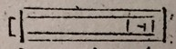

Thomas Beddoes to the Editor of The Monthly Magazine, 8 September 1799
Sir
The defective knowledge of arithmetic, and the distaste for the whole of mathematical science, which young men bring with them from our classical schools, have been frequent subjects of complaint. The evil, I suppose, still subsists in full force; nor is it to be imagined that the pupils of ladies’ boarding-schools are greater proficients in figures, than those who are destined to be their partners for life. On the constant convenience of a readiness at accompts, I need not expatiate; and the various indirect uses even of a slight acquaintance with the exact sciences have been often pointed out: perhaps nothing would more effectually check the prevailing taste for desultory, inattentive reading; or more powerfully counteract the pernicious effects of this intellectual poison.
Of the common repugnance to arithmetic, a bad method of teaching seems, as in similar cases, to be the principal cause. Without some extrinsic motive, such as the conviction of its necessity to a livelihood, or the strong terror of the rod (and such a motive will not often operate upon the rich), arithmetic will continue to be loathed, as long as the master contents himself with proposing and exemplifying the dry rule. To render the study engaging, a liberal explanation of the very curious properties of figures must be given; and the reasons for such and such a proceeding be amply and familiarly developed. This can be done in a manner perfectly clear, and highly amusing to intelligent children, of six or seven years of age. The best elementary tract I have yet seen, is that by Condorcet (Moyens d’apprendre à compter surement et avec facilité). I do not, however, wish to see even this excellent tract literally translated. It might be considerably improved. That it should have defects we cannot wonder, when we are told: C’étoit dans l’asyle où il se cachoit à ses bourreaux que Condorcet l’a écrit.
To enliven the rudiments of arithmetic, and to make certain points more distinct, I am, by all means, for adopting mechanical contrivances, or rather for extending their use, for they are to a certain degree already in use. An example or two will best explain my plan.
Let us suppose that the effect of the cypher (0) in notation is to be shewn, I would have a slider, from which, at the end nearest the right-hand; there should project a cube, having some figure, suppose 1, inscribed upon its upper surface; I would also have other detached pieces in the form of wedges, with their base of the same size as one of the faces of the cube, upon which base a cypher should be inscribed. The slider should move in a simple frame of this shape. [sketch]  When it is pushed quite home, the cube will stand close to the right end of the frame, and the figure (1) will appear; in this state of the apparatus, push in a wedge between the right end of the frame, and the slider, which of course will be driven back, and so will be seen: by another wedge we shall produce 100, and, so on. Thus it will be perceived, that each cypher-wedge has the effect of removing the figure (1) a single place nearer, the left-hand, and of increasing its value tenfold. I suppose the learner previously to understand notation, as far at least as 10, 100, &c. By a set of wedges, marked with the different numerals, he thus may be taught notation to any extent. Were I to put down here all that is to be said at the moment, your readers would find me needlessly tedious. Those who feel themselves at a loss for an explanation, must be either dull of apprehension, or little in the habit of addressing instruction to the senses of the young.
Let it not be supposed that I imagine the contrivance I have described to be necessary. The same thing, I am very sensible, may be shewn on a slate or upon paper. But I wish to gain an interest in the mind of the pupil for the study of figures; and the simplest movement interests a child. The only precaution requisite is, that the apparatus should be plain, and have few parts; otherwise, the eye will fix upon something foreign to the design.
Give me leave to take, from the second rule in arithmetic, a more difficult and more interesting example. The pupil, who is taught to borrow in subtraction imitates his preceptor, and finds his sum right. But of the rationale he often either remains quite ignorant, or is puzzled by the attempts at elucidation.
To explain the operation mechanically, let a number of counters of the size of a sixpence (or pease or French-beans) be provided; let a portion of the counters be fixed together, in tens and hundreds, by a peg, parting through a small hole in the centre of each (in the case of seeds a string may be used). Let it now be proposed to take (or subtract) 136 from 245; I suppose the pupil to have been initiated in the rule of addition mechanically, I mean by counters; not by mere written figures: the 136 should first be counted out of 245 detached pieces, and the remainder ascertained; then let the figures of the larger sum be written down at such a distance from one another, that two packs, of a hundred counters each, can be placed upon the left-hand figure, and four packs, of ten each, upon the middle figure, and five single counters upon the right-hand figure: at the same time, the sum should be written down in the usual manner (245/136) on another part of the slate or paper.
The method of proceeding after this need scarce be described. Six cannot be taken from five; so the learner must be directed to remove (borrow) one of the 4 packs of ten from the second to the first place of figures, detaching the counters. From these fifteen counters he will take six; he will next have three, that is, all the tens to take from the middle place, and removing one pack from the third place, there will be left one 5 and the sum compleated; and the management with figures made perfectly intelligible. Of course, the teacher will propose a concrete case; as Mr Wells borrowed of Mr. Somers 245 pounds, and, at different times, paid back 135; he is come to discharge the rest of his debt and wants to know how much he still owes?
After borrowing in subtraction, our custom is to add an unit to the next figure on the lower row: but it seems more perspicuous at first, and it is more conformable to the theory of the process, to diminish one from the corresponding figure of the upper,* as Condorcet does. Both operations can afterwards be shewn to produce the same effect.
Some years ago, finding that the late Mr. B. Donne had mechanical demonstrations of the principal proportions of Euclid; and that these demonstrations were sufficiently plain and striking, I procured him a number of subscribers; and sets of demonstrations were made, and an explanatory book printed.
By help of these, young persons soon and easily learn many properties of plane, and some of solid figures. Somewhat more than an hundred sets are dispersed through the kingdom; and it were to be wished, that more were in readiness. But as the project was, I believe, never advertised in any newspaper, or noticed in any literary journal, the knowledge of it was confined to a few hundred families. Those who have used these models, have been satisfied with them; though possibly they could be greatly improved. I did not think the book well calculated for the purpose, supposing the whole had been to be put into the hands of young people. It does not want perspicuity; but many technical terms, as lemma, scholium, are introduced. To those, however, who think with Quintillian, that viva voce instruction is best, and in the rudiments of knowledge it surely is particularly advantageous, the defect of adaptation to the capacity of children in the book will be a trifling objection. There is a work, entitled Cowley’s Solid Geometry, sold by Jones, 135, Holborn, which would come in perfectly well after Donne’s models.
I am, Sir, your humble servant,
Thomas Beddoes,
Rodney-place, Clifton,
Sept. 8, 1799.
* This had likewise been directed in Practical Education
Published: The Monthly Magazine, 8 (October, 1799), 677–78.